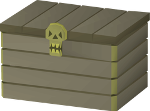

Your openings
Your loot

Nothing claimed yet
Enter completed openings to simulate your rewards.
Notable rewards
Collected loot
Dry calculator results
How lucky are your rewards?
Enter completed openings and individual item quantities received to calculate the odds.